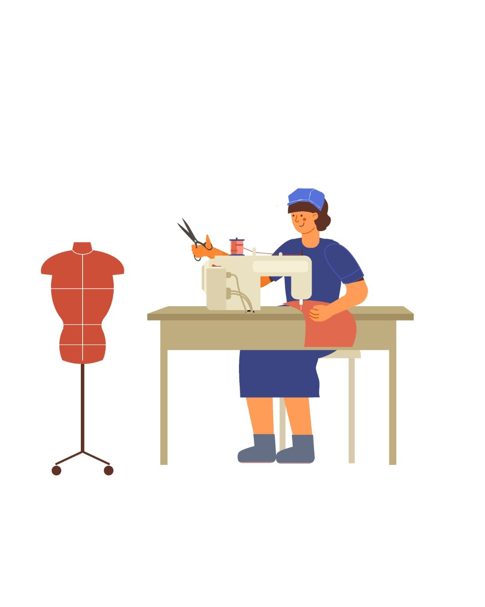
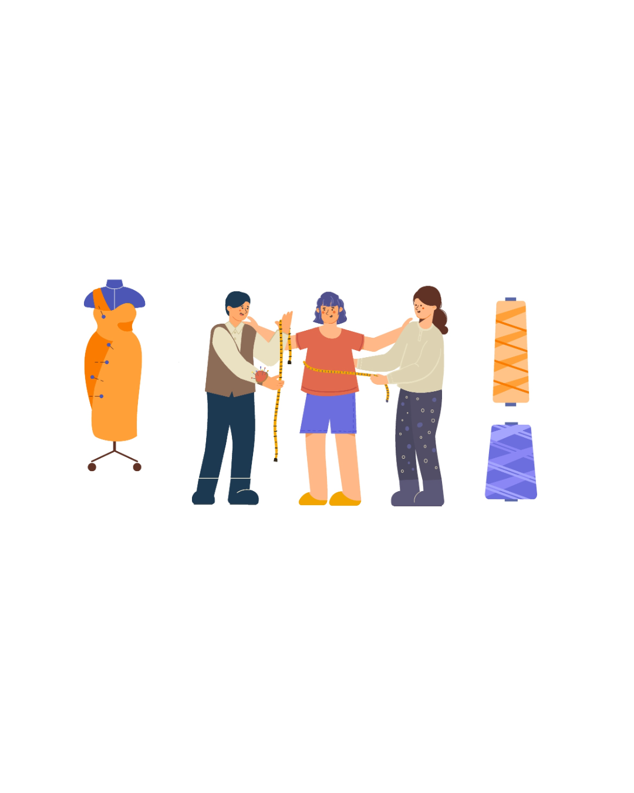
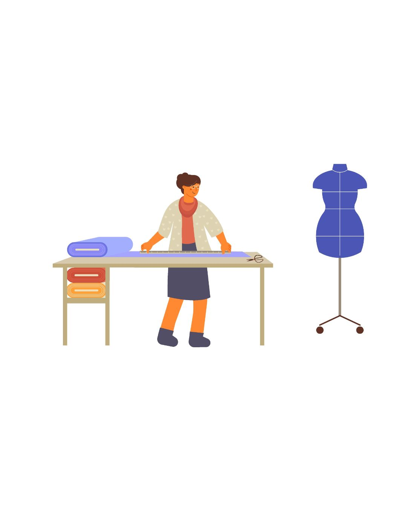

Our Services in San Antonio

Alterations
Pants, dresses, jackets, shirts — tailored to perfection. Starting at $20

Custom Clothing
Custom-made outfits, dresses, suits, and more. Starting at $100

Repairs & Adjustments
Mending, zipper replacement, hemming, and restoration. Starting at $15
Specialty Work
Wedding dresses, formalwear, and unique garments. Pricing varies.

Items for Sale
Clothing, shoes, and even tamales for sale.